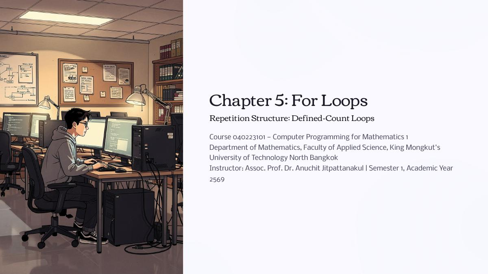
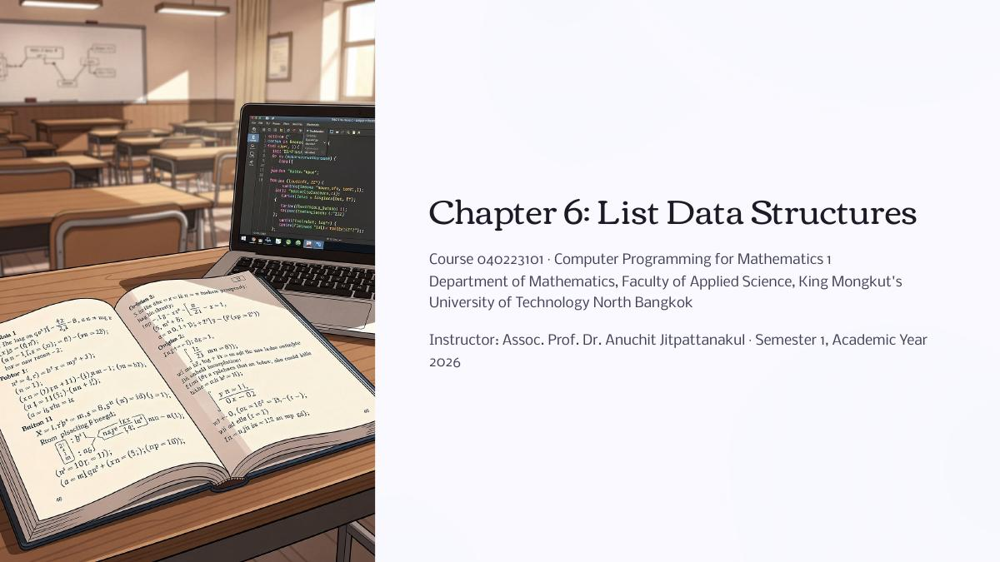
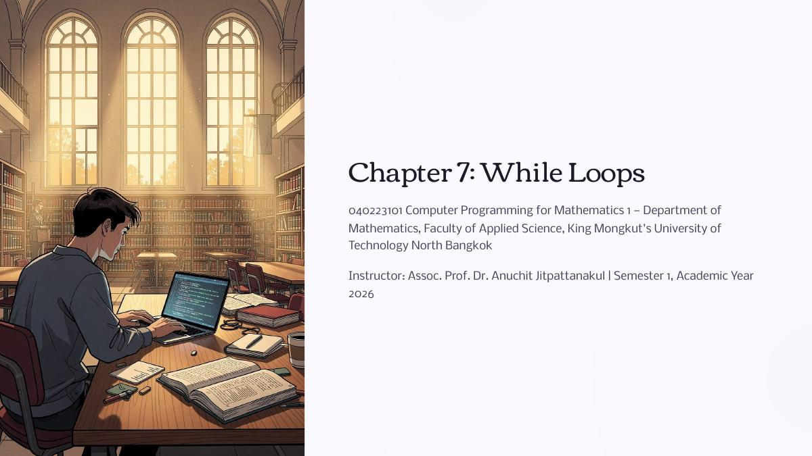
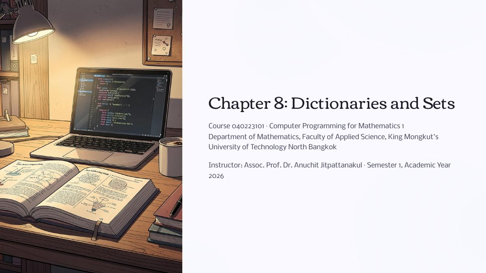
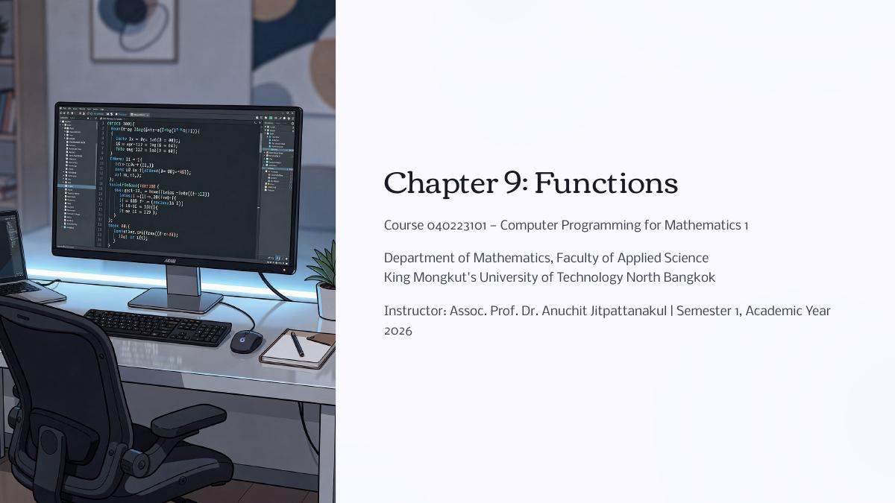

หนังสือเรียนออนไลน์ เปิดอ่านได้เหมือนพลิกหนังสือจริง เรียนรู้พื้นฐานการเขียนโปรแกรม Python สำหรับงานคณิตศาสตร์ ตั้งแต่แนวคิดคอมพิวเตอร์จนถึงการใช้ไลบรารีมาตรฐาน
เลือกบทเรียนที่ต้องการ แล้วเปิดอ่านแบบพลิกหน้าได้ทันทีบนเบราว์เซอร์ ไม่ต้องดาวน์โหลด
องค์ประกอบของระบบคอมพิวเตอร์ แนวคิด IPO ภาษาระดับสูงกับภาษาเครื่อง การติดตั้ง Python และโปรแกรมแรก
ตัวแปรและชนิดข้อมูล การรับค่าจากผู้ใช้ด้วย input() การแสดงผลด้วย print() และการจัดรูปแบบข้อความ
การเรียกใช้ไลบรารีมาตรฐานของ Python เช่น math และ random เพื่อแก้ปัญหาทางคณิตศาสตร์
นิพจน์เงื่อนไข ตัวดำเนินการเปรียบเทียบและตรรกะ คำสั่ง if / if-else / if-elif-else การย่อหน้า และ if ซ้อนชั้น

Chapter 5การวนซ้ำด้วย for และ range() การคำนวณผลรวม ผลคูณ อนุกรม ลูปซ้อน และตารางสูตรคูณ

Chapter 6การสร้างและเข้าถึงสมาชิกลิสต์ การ slice เมท็อด append/insert/remove/sort และการวนลูปผ่านลิสต์

Chapter 7เปรียบเทียบ while กับ for เงื่อนไขการหยุด การเลี่ยง infinite loop คำสั่ง break/continue และงานคำนวณเชิงตัวเลข

Chapter 8ดิกชันนารีแบบ key-value เมท็อด keys/values/items/get เซตและการดำเนินการ union/intersection/difference การนับและจัดกลุ่มข้อมูล

Chapter 9การเขียนโปรแกรมเชิงโมดูล นิยามฟังก์ชันด้วย def พารามิเตอร์/อาร์กิวเมนต์ ขอบเขตตัวแปร ค่าเริ่มต้น การคืนค่าหลายค่า และ recursion
ข้อดีของอาเรย์ NumPy การสร้างอาเรย์ 1D/2D การคำนวณแบบเวกเตอร์ การดำเนินการเมทริกซ์ และแก้ระบบสมการเชิงเส้น
เปิดอ่านทีละหน้าเต็มจอ มีปุ่ม ลูกศรคีย์บอร์ด คลิกที่ขอบหน้า และปัดนิ้วเพื่อเปลี่ยนหน้า
รองรับทั้งคอมพิวเตอร์ แท็บเล็ต และมือถือ บนมือถือจะแสดงทีละหน้าให้อ่านสบายตา
ขยายดูรายละเอียดโค้ดได้ และดาวน์โหลด PDF ไปอ่านออฟไลน์เมื่อต้องการ
วิชา 040223101 Computer Programming for Mathematics 1
ภาควิชาคณิตศาสตร์ คณะวิทยาศาสตร์ประยุกต์
มหาวิทยาลัยเทคโนโลยีพระจอมเกล้าพระนครเหนือ (KMUTNB)
ผู้สอน: รศ. ดร. อนุชิต จิตพัฒนกุล · ภาคเรียนที่ 1 ปีการศึกษา 2569